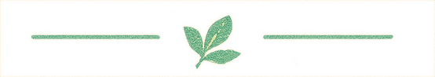
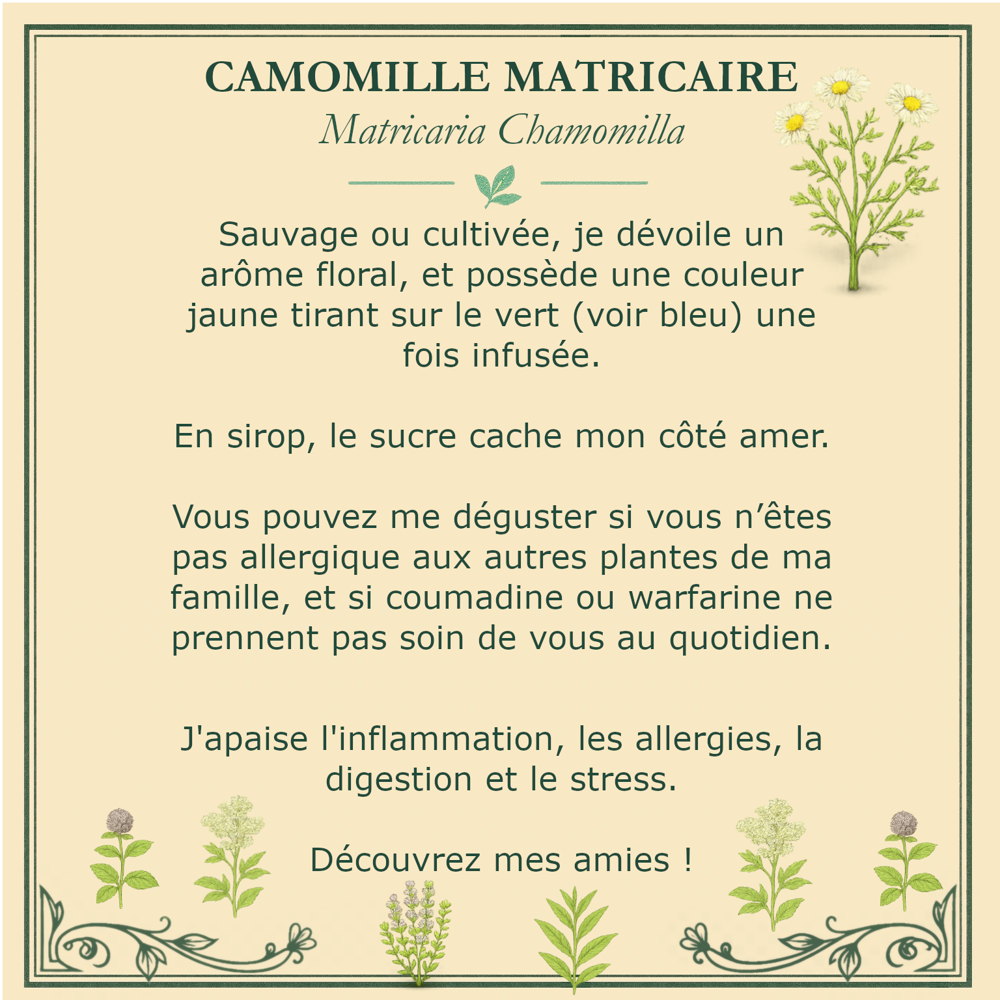
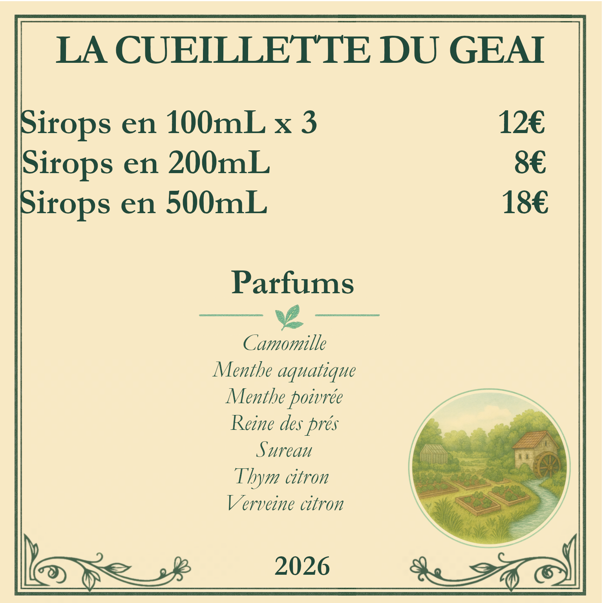

Caractère aromatique
Chaque feuille, chaque fleur et chaque tige sont choisies pour leur expression propre.
Herboristerie paysanne à Biziat, dans l'Ain
Des plantes cueillies localement et transformées à petite échelle pour préserver leurs arômes naturels.
📍 Biziat (Ain) · Point de vente : 1015 rte du moulin du geai


À propos
La Cueillette du Geai est une activité agricole artisanale dédiée à la cueillette et à la transformation de plantes. Inspirée des anciennes herboristeries et d'une production locale à petite échelle, la marque défend une vision simple : faire parler la plante avec justesse, sans artifice ni superflu.
Chaque feuille, chaque fleur et chaque tige sont choisies pour leur expression propre.
La plante est toujours pensée dans son rapport au lieu, à la saison et au territoire.
Produits artisanaux de plantes
Deux grandes familles de produits composent l'univers de La Cueillette du Geai : des tisanes artisanales et des sirops de plantes. Toutes les préparations sont réalisées en petites quantités, avec une attention portée à la qualité des plantes, à la transformation douce et à l'équilibre des saveurs.
Des tisanes de plantes travaillées avec simplicité et précision, en monoplantes ou en assemblages. Le séchage naturel permet de préserver la finesse aromatique de la feuille, de la fleur et de la tige, sans brusquer leur expression.

Des sirops artisanaux où la plante reste lisible, fraîche et expressive. La transformation est volontairement douce afin de conserver le relief aromatique, la fraîcheur végétale et la personnalité propre à chaque plante.

Méthode
La production avance à l'échelle du lieu, avec des gestes sobres, une attention au végétal et une recherche de saveurs naturelles plutôt que d'effets artificiels.
Les plantes sont récoltées au plus près du territoire, dans le respect de leur rythme naturel et de leur saison.
Le séchage naturel permet de préserver l'équilibre aromatique, la qualité botanique et la finesse des plantes.
Les cultures sont menées à petite échelle, avec attention portée au sol vivant, aux cycles naturels et à la santé des plantes.
Les recettes sont conçues pour laisser la plante s'exprimer avec clarté, sans masquer sa personnalité.
Acheter les produits
Le site présente l'univers de la marque et oriente vers le contact direct ainsi que vers l'achat sur place, à l'adresse de production. Il ne s'agit pas d'une boutique en ligne.
Les produits peuvent être achetés directement à l'adresse de production.
Les produits peuvent être réservés après prise de contact selon les disponibilités.
La vente reste simple, locale et authentique, autour d'un échange avec le producteur.
Plantes
Une sélection de plantes en accord avec les parfums déjà présentés sur le site.
Contact
Pour toute question, pour connaître les produits disponibles ou pour venir sur place, les informations utiles sont réunies ici.
Vente sur place et contact direct.